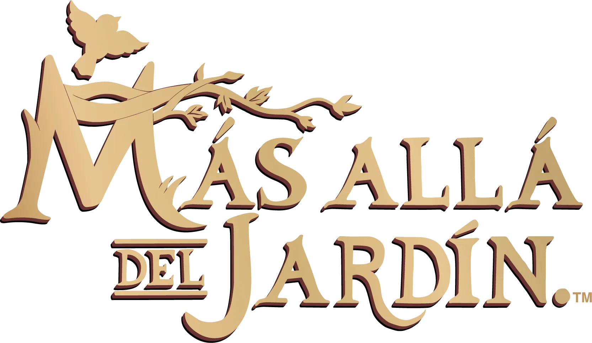
Más allá del jardín (título original en inglés: Over the Garden Wall) es una miniserie animada estadounidense de 10 episodios, creada por Patrick McHale, y transmitida en Cartoon Network. La miniserie se centra alrededor de dos hermanos que viajan a través de un extraño bosque con el fin de encontrar su camino a casa. En 2024, la serie cumplió diez años desde su estreno. Para celebrarlo, Cartoon Network estrenó por Youtube un corto realizado en stop motion. Esto demostró una vez más el gran cariño que los creadores tienen por la animación, en sus diversas formas.
Los hermanos Wirt y Greg se pierden en un misterioso y melancólico bosque llamado Lo Desconocido (The Unknown). En su intento por volver a casa, se topan con una serie de personajes extraños y encantadores: Beatrice, un ave azul que promete ayudarlos; El Leñador, una figura enigmática que les advierte sobre la amenaza de La Bestia; y diversos habitantes de pueblos que parecen atrapados tiempos antiguos.
A medida que avanzan, los episodios mezclan humor, melancolía y terror sutil, explorando temas como la muerte, la redención, el miedo y la madurez. Detrás de su estética de cuento otoñal, la serie esconde una profunda alegoría sobre el viaje interior y la búsqueda de sentido en medio de la confusión y la oscuridad.
Con una ambientación inspirada en el folclore estadounidense, la música de época y una atmósfera nostálgica, Más allá del jardín se ha convertido en una obra de culto por su belleza visual, narrativa poética y simbolismo profundo.
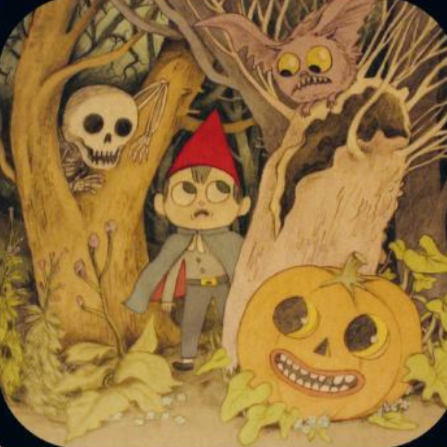
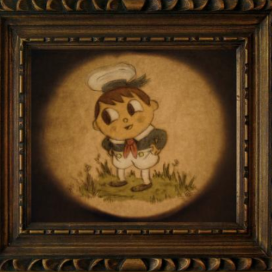
Greg actúa sin pensar. Es energético, juguetón y muy despreocupado… hasta el punto de ser completamente ajeno al peligro. Le gusta comer, tocar cosas, hacerse amigo con extraños y le encanta su rana mascota.
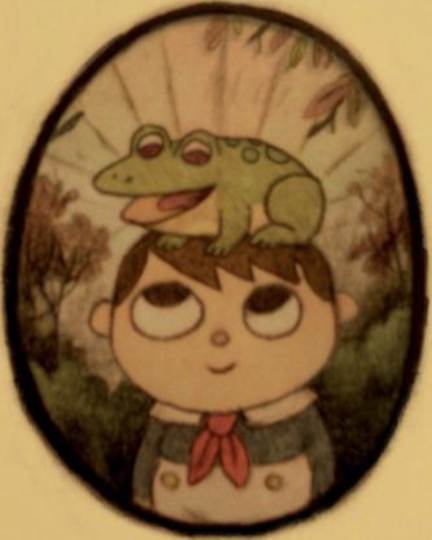
La mascota de Greg. Su nombre hace referencia a un chico llamado Jason Funderberker (cambiando una "e"). Duerme en el gorro de Greg, quién cree que tiene más de 200 años.
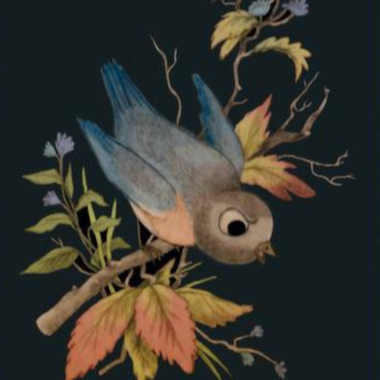
Beatrice es una chica maldita con ser un pájaro azul, y piensa que es asqueroso. Tiene que comer bichos y gusanos porque no puede digerir comida normal. Hace nidos de forma obsesiva, y otras estructuras con ramitas, aunque ella no quiera hacerlo.
| Nº | Episodio | Sinopsis | Estreno | IMDB |
|---|---|---|---|---|
| 1 | El viejo molino | Perdidos en el misterioso bosque de lo Desconocido, dos hermanos llamados Wirt y Gregory se encuentran con un leñador viejo y cansado, que les advierte que tengan cuidado con la temible Bestia que deambula por el bosque oscuro. | 3/11/2014 | |
| 2 | Tiempos difíciles en el Granero | Cuando Beatriz es salvada por Greg, ella le da la oportunidad de ofrecerle un favor a cambio, mientras tanto, los hermanos y la ave siguen su camino hacia un misterioso pueblo. | 3/11/2014 | |
| 3 | Escuela para Animales | Wirt, Greg y Beatrice se involucran en las travesuras musicales de una escuela de animales, una maestra con mal de amores, un benefactor viejo y malhumorado y un gorila prófugo. | 4/11/2014 | |
| 4 | Canciones de la Linterna Oscura | Beatrice queda a la intemperie en un día lluvioso con un caballo cabeza hueca, mientras Wirt y Greg deben pedir indicaciones en una taberna local. Se revelan algunos secretos sorprendentes sobre lo Desconocido. | 4/11/2014 | |
| 5 | Loco Amor | Acaso la mansión en constante crecimiento del millonario Quincy Endicott está embrujada por un hermoso fantasma, o en realidad el barón del té se está volviendo loco. Greg y Fred, el Caballo, están investigando el caso. Mientras tanto, Wirt y Beatrice quedan atrapados en un armario cuando buscan monedas. | 5/11/2014 | |
| 6 | Cantos en Ranalandia | Yendo a ver a Adelaide de la Pastura, Greg se da cuenta de que su propia rana puede estar mejor viviendo con otros anfibios. Además se descubre las intenciones de Breatrice y quien es Adelaide. | 5/11/2014 | |
| 7 | El Sonido de la Campana | Buscando refugio de la lluvia, Wirt y Greg entran en una casa donde habitan una chica y su aterradora tía que más tarde no resulta ser tan aterradora. | 6/11/2014 | |
| 8 | Niños en el Bosque | Wirt se da por vencido al darse cuenta de que no puede regresar a su casa y también le echa la culpa a Greg por haberse perdido en el bosque. Luego ellos se quedan dormidos y Greg en el sueño visita la ciudad nubosa donde salva a la gente de un malvado, la reina del lugar le agradece a Greg por salvarlos y le concede un deseo, Greg le pide regresar a su casa y ella le dice que solo a él ya que Wirt le pertenece a la Bestia. | 6/11/2014 | |
| 9 | Hacia lo desconocido | En este capítulo se muestra como Wirt y Greg se perdieron en el bosque. Luego Wirt se despierta dentro de un árbol con unos pájaros cuidándolo, ya que Beatrice lo rescató. Wirt decide ir a rescatar a su hermano que pidió un deseo de intercambiar y pertenecer a la Bestia. | 7/11/2014 | |
| 10 | Lo desconocido | Greg se encuentra en las manos de La Bestia mientras que Wirt y Beatrice lo buscan desesperadamente. | 7/11/2014 |
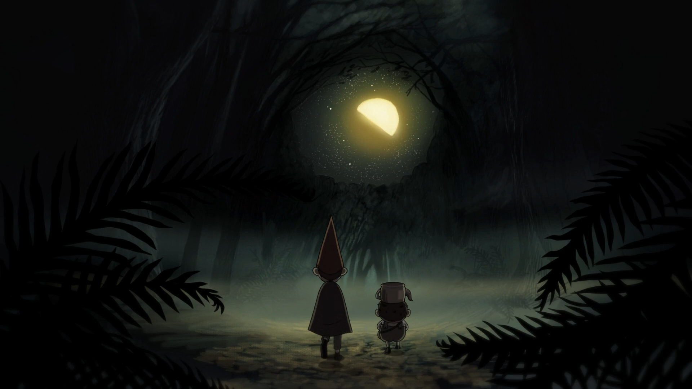
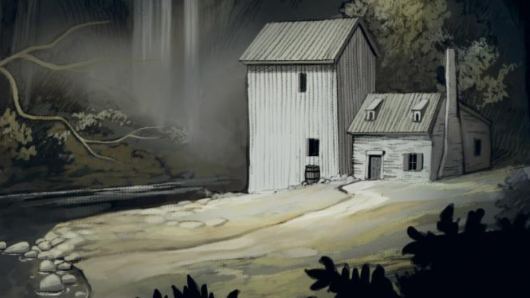
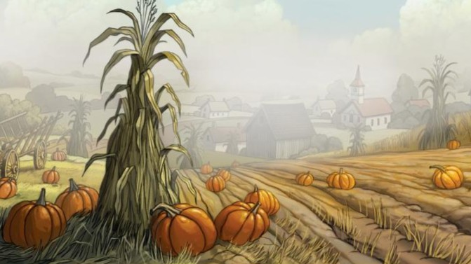
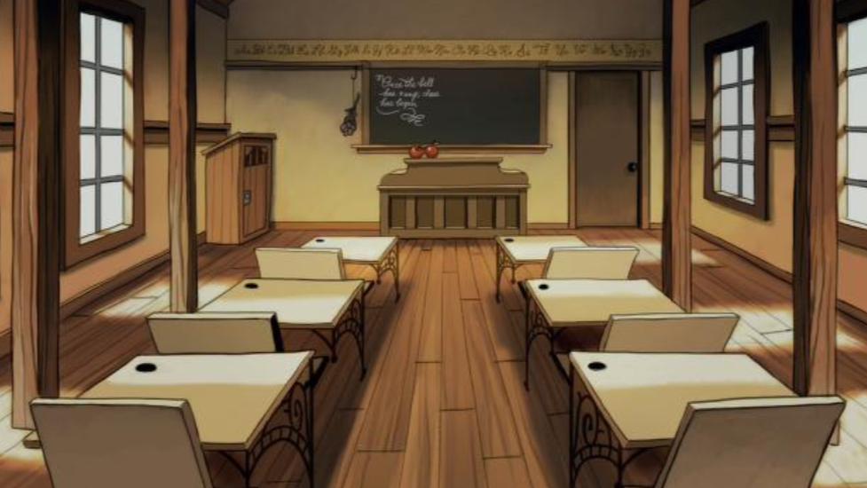
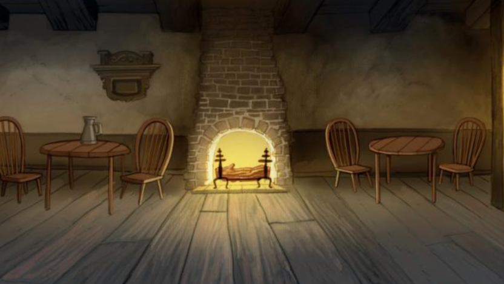
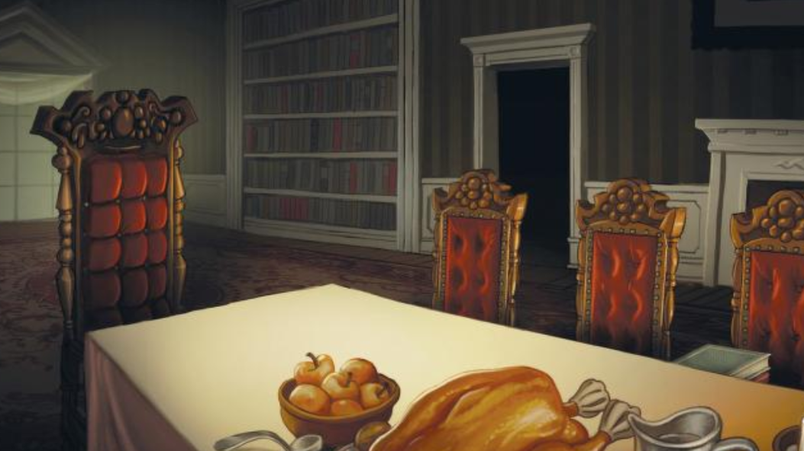
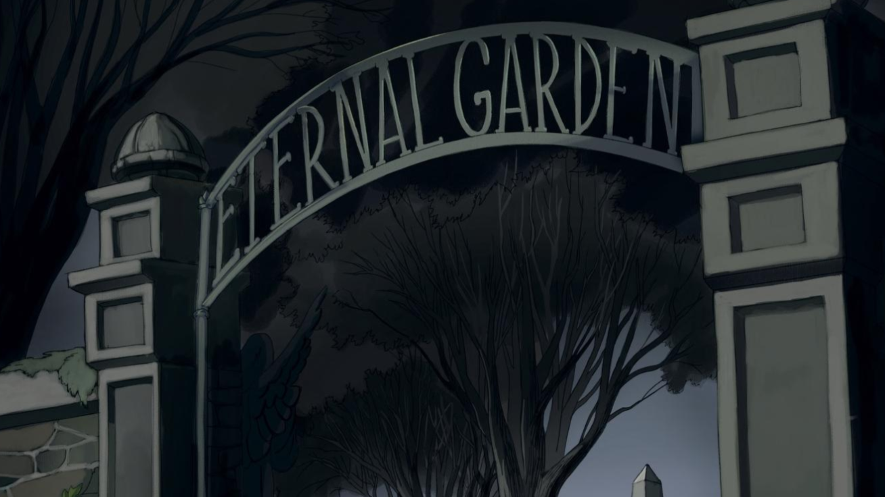
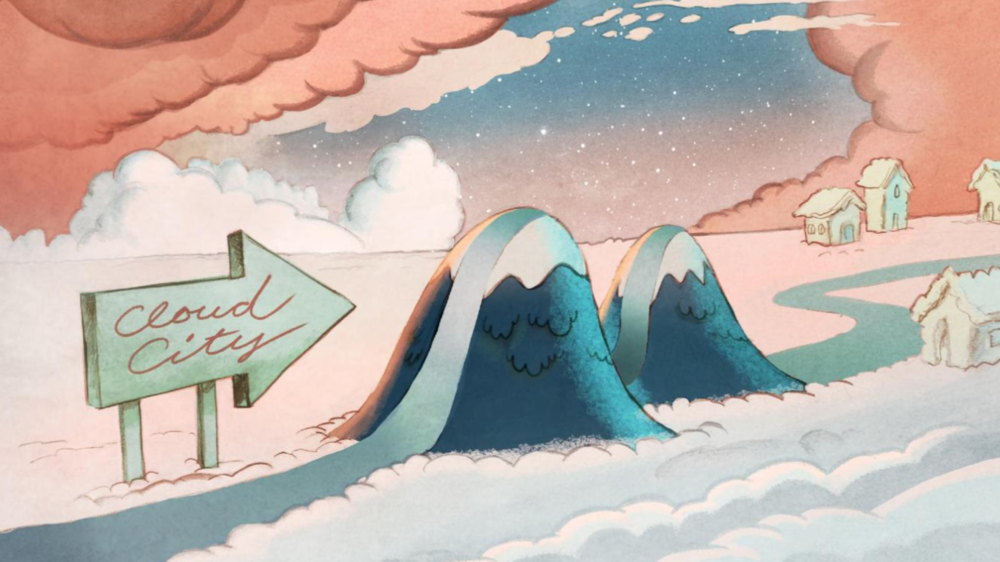
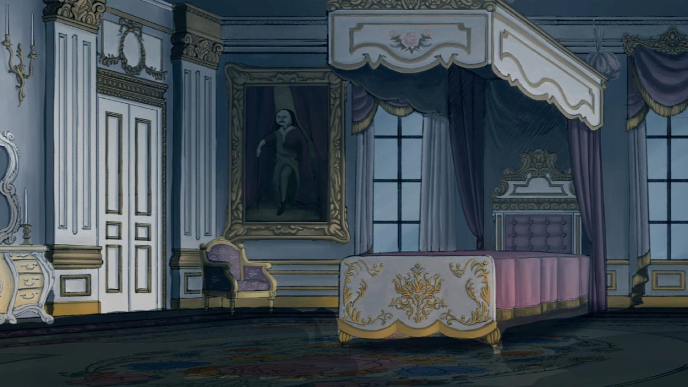
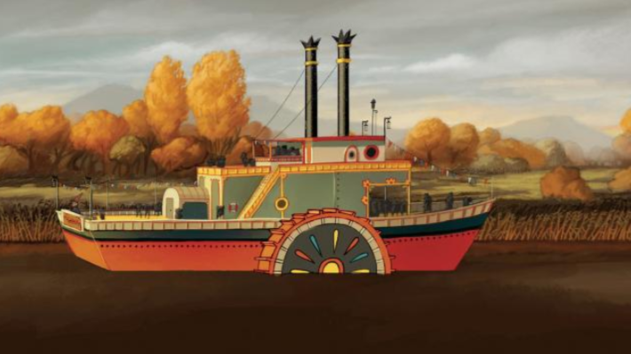
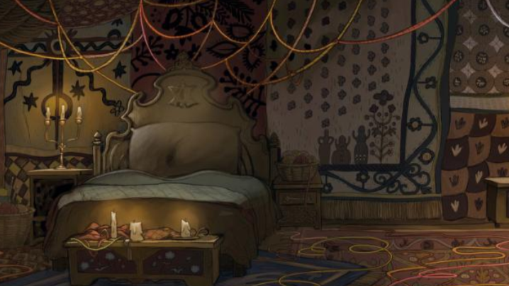
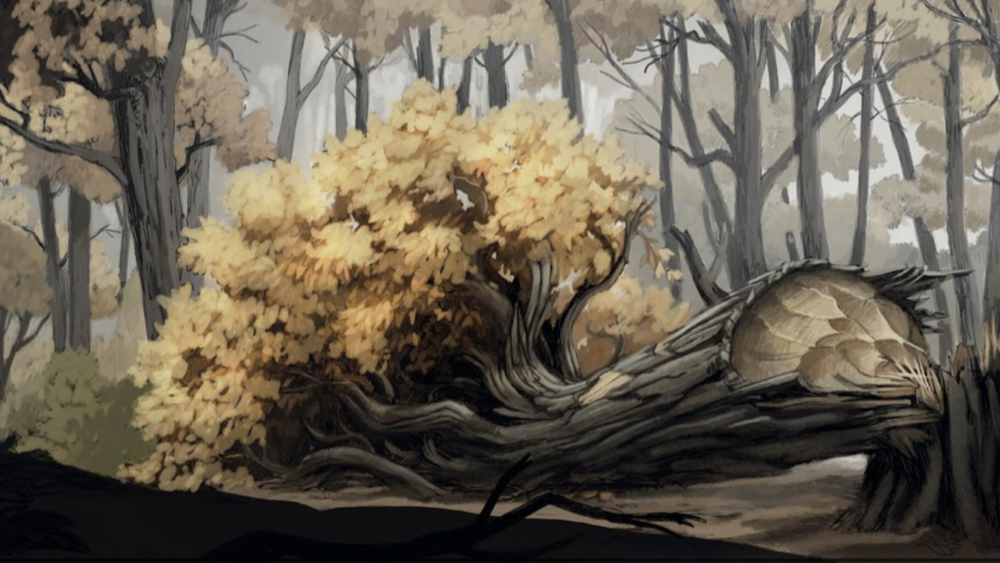